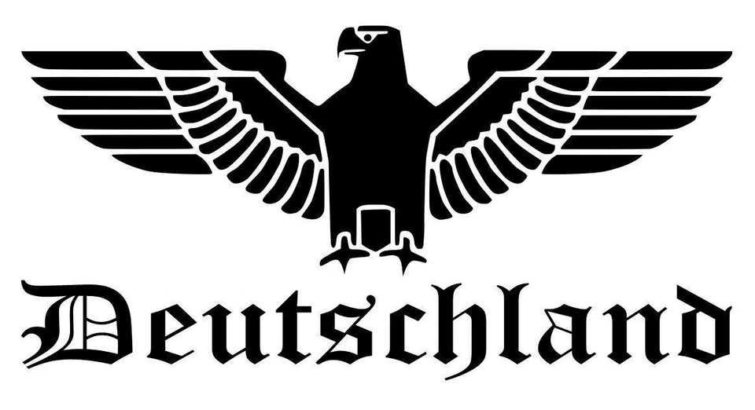

Escape Room
zum dritten Reich
Ihr seit gefangen in einer Zeit, wo Menschen systematisch gejagt und getötet werden. Wenn ihr eine Chance auf eine heile Rückreise haben wollt, müsst ihr euch anpassen! Löst die Rätsel, erhaltet das Lösungswort und lernt die Ideologie der nationalsozialistischen Zeitgenossen, sonst bleibt euch jegliche Hoffnung auf eine sichere Zukunft verwehrt.